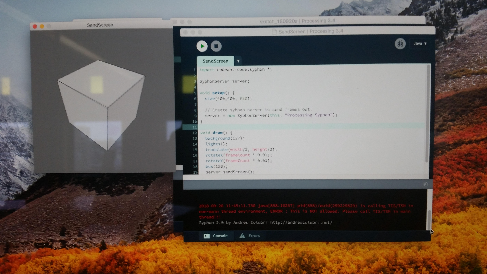
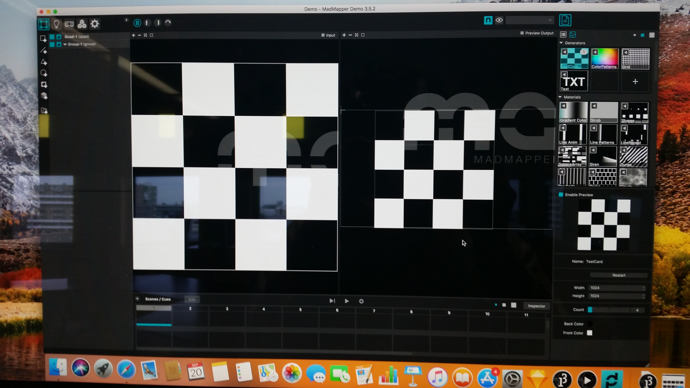
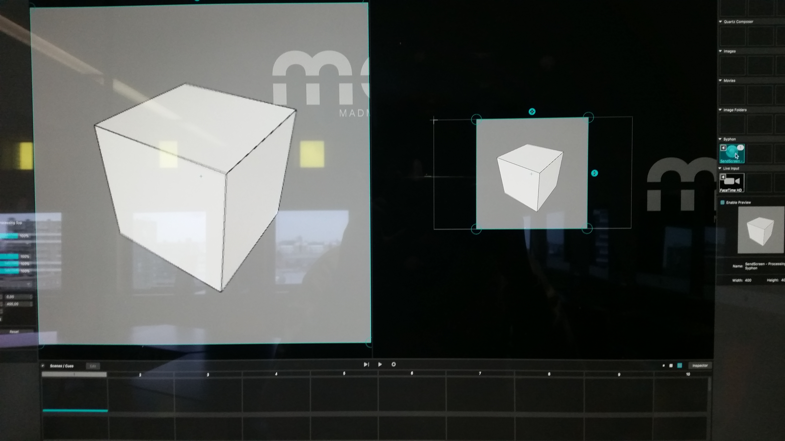
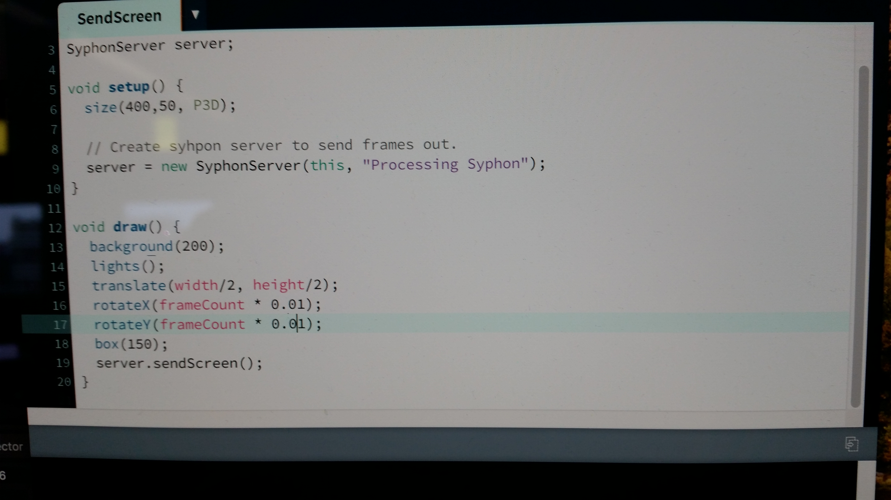

Assignments
Ten eerste heb ik op het landschap bergen gemaakt. De bergen gaan langs alle randen van het gebied.

Ten tweede heb ik een player toegevoegd aan het landschap. Door het pakket de downloaden kon ik als persoon zelf door de wereld lopen. Door de peilen op het toetsenbord te gebruiken kun je door het landschap lopen.

Bij nummer drie heb ik verschillende soorten objecten op het landschap gezet. De verschillende soorten objecten staan niet allemaal op de grond. De gene hangt ook in de lucht waardoor je alleen maar de schaduw ziet van het object.

Nu heb ik twee verschillende objecten, de tijgers op het landschap gezet. De twee objecten komen van een store die in het programma staat. De objecten zijn gedownload en ik het landschap gezet.

Als laatste als je naar de tijgers loopt dan zal het vuur aan gaan. Doordat er een stukje code in het programma gezet is zal het vuur aan blijven en niet na een paar seconde uit gaan.

Bij de opdracht mapping moest processing en sketch aan elkaar gekoppeld worden. De eerste opdracht moest Syphon geinstalleerd worden. Dat duurde even voordat ik door had hoe dat moest. Uiteindelijk ging lukte het en is het programma opnieuw opgestart. In het programma procession heb ik een script geopend en aangezet. De codes maakte een vierkant in 3D. Dat kon bewegen en aangepast kon worden door de codes.

Na de eerste stap ben ik terug gegaan naar het programma Madmapping. Daarin moest een vierkant gemaakt worden.

Nadat er een vierkant gemaakt was moest procession gekoppeld worden aan Madmapping via SendScreen. Uiteindelijk werd het beeld van procession in Madmapping weergeven. Dat werd gedaan in de vierkant die eerder gemaakt moest worden in Madmapping.

Als laatste heb ik de codes aangepast om het vierkant en scherm te veranderen. Zo kreeg je een gek effect in het beeld en was het geen vierkant meer. Het bleef draaien, maar de vorm was anders geworden.
